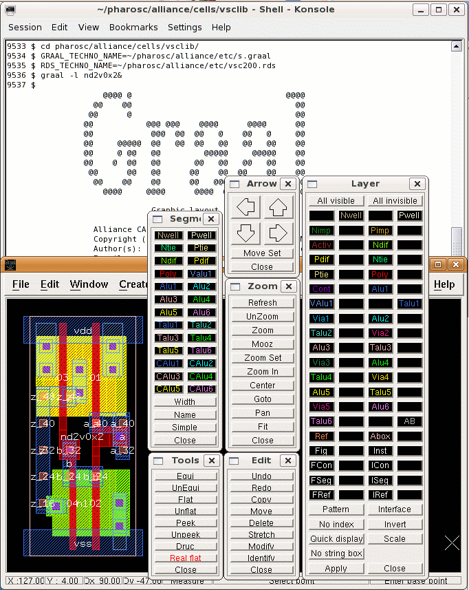

| vlsitechnology.org /Linux help/Graal layout | |
Graal layout | |
Linux help
Windows help
Linux Live CD
Graal is the lambda based layout editor from Alliance. All the pharosc layout drawings are entered here first, and then converted to Magic by writing out and hacking CIF files. The layout files for Graal are in:
~ $ pharosc/alliance/cells |
The appearance of the layout depends on the RDS file pointed to by the environment variable RDS_TECHNO_NAME. If it is equal to vsc200.rds
~ $ echo $RDS_TECHNO_NAME ~/pharosc/alliance/etc/vsc200.rds |
then the editor will show 2µm layout. This is the best file for editing layout drawn with the pharosc 2µm rule set. If RDS_TECHNO_NAME is set to vsc013.rds then the editor will show layout using the generic 0.13µm rule set.
Other values like the default cmos.rds cause the editor to show unintelligible layout because these files are written for the sxlib and vxlib. These libraries have been designed around a transistor length of 1λ rather than the 2λ used for the vsclib, wsclib, rgalib and vgalib.
The screenshot shows the vsclib nd2v0x2 cell in Graal with the vsc200.rds file. For editing, I recommend switching off the nwell, pwell , talu1 and AB layers.
Make sure that the Graal binary is on your search path. In my .bashrc file I have something like
export ALLIANCE_TOP=/home/cad/alliance export PATH=$ALLIANCE_TOP/bin:...more... |
The which command shows the location of Graal:
~ 9551$ which graal /home/cad/alliance/bin/graal |
This is not the location of a default Alliance setup, which is
/opt/alliance |
I recommend that Alliance is not installed in the same partition used by the Linux OS, such as under /opt. If it is, then it could be deleted if you change your Linux distribution, and then you will need to reinstall Alliance from scratch. I speak from experience!
I think this recommendation means that you cannot install Alliance from the binaries, which will locate it under /opt.
